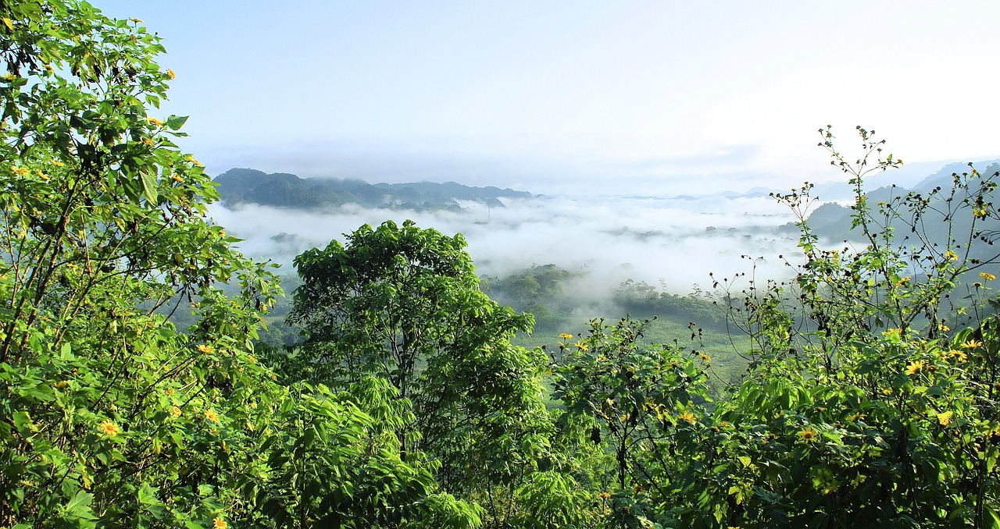

Floresta Amazônica: O Pulmão do Mundo
A Floresta Amazônica é considerada a maior floresta tropical do mundo, cobrindo cerca de 6,7 milhões de quilômetros quadrados e atravessando nove países da América do Sul, incluindo Brasil, Peru, Colômbia e Venezuela. Sua biodiversidade é extraordinária, abrigando milhões de espécies de plantas, animais e insetos, muitas das quais ainda não foram catalogadas pela ciência.
Além de sua riqueza natural, a Amazônia desempenha um papel fundamental na regulação do clima global, absorvendo grandes quantidades de dióxido de carbono e liberando oxigênio. Por isso, é frequentemente chamada de "pulmão do mundo". A floresta também é essencial para as populações indígenas e comunidades tradicionais, que dependem de seus recursos para sobreviver e mantêm um vasto conhecimento sobre a fauna e flora locais.
No entanto, a Floresta Amazônica enfrenta ameaças crescentes devido ao desmatamento, queimadas e atividades ilegais, como a extração de madeira e mineração. A preservação desse ecossistema é vital para o equilíbrio ambiental do planeta e para a manutenção da biodiversidade.
Proteger a Amazônia é um compromisso de todos, garantindo que suas maravilhas naturais continuem a existir para as futuras gerações.